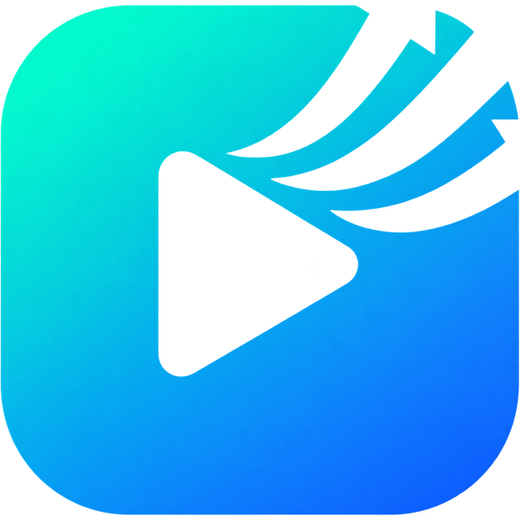
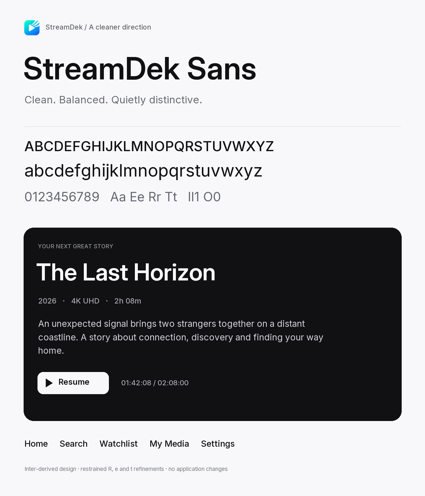
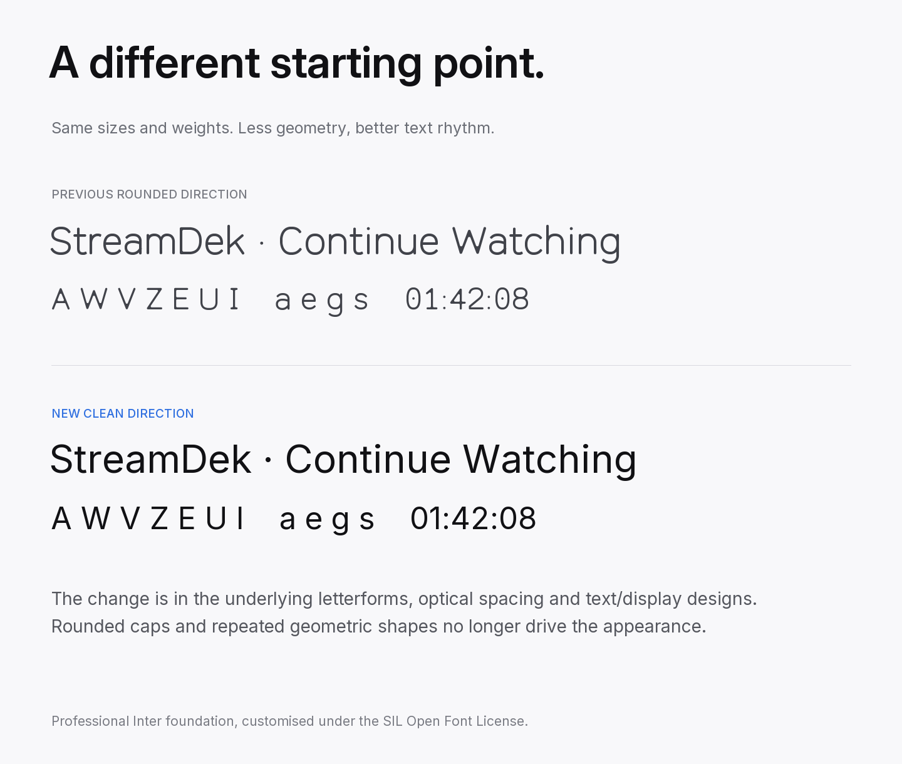
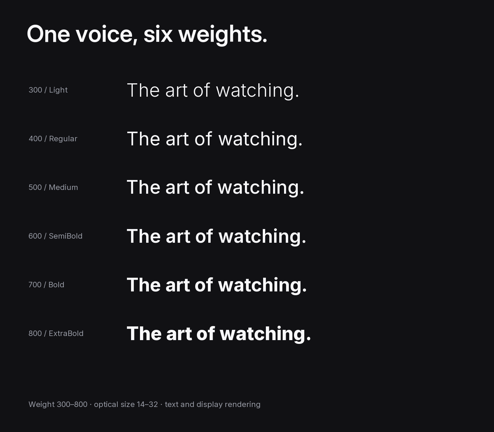
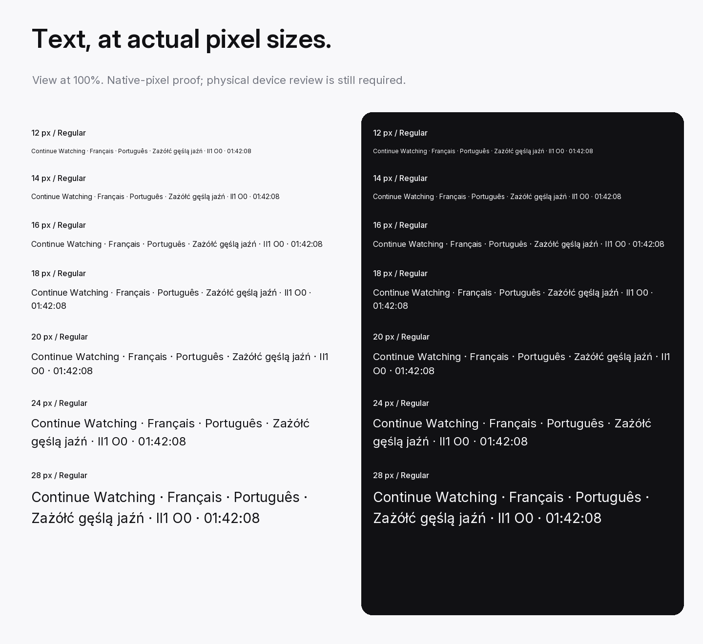
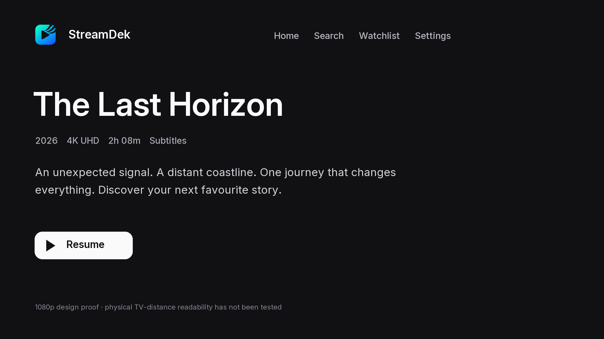

StreamDek / Clean directionStreamDek Sans
A professional UI foundation with restrained custom details. Balanced proportions, optical sizing and a natural rhythm at every size.
Based on Inter 4.1 under the SIL Open Font License. This is an explicitly documented derivative, with subtle R, e and t outline refinements.
Six weights. Text and display optics.
300 / LightThe art of watching.
400 / RegularThe art of watching.
500 / MediumThe art of watching.
600 / SemiBoldThe art of watching.
700 / BoldThe art of watching.
800 / ExtraBoldThe art of watching.
Design proofs

01 clean direction
02 direction comparison
03 weights
04 small text
05 tv proof